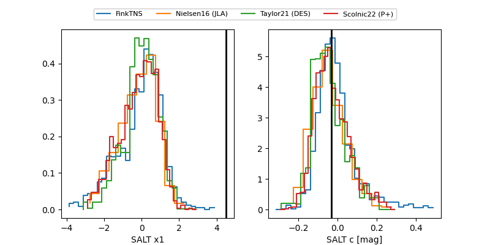

FINK: ZTF25abpopdk
Lasair: ZTF25abpopdk
ALeRCE: ZTF25abpopdk
TNS: 2025xdt
YSE: 2025xdt
ZTF25abpopdk (ztf,fink)
2025xdt (tns,yse)
equatorial (ra, dec) = (246.8044,+33.47211)
galactic (l, b) = (54.5309,+43.50598)

last atlasc=18.24, atlaso=18.53, ztfg=18.37, ztfr=18.56
7 atlasc, 3 atlaso, 4 ztfg, 2 ztfr detections